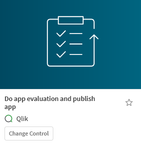
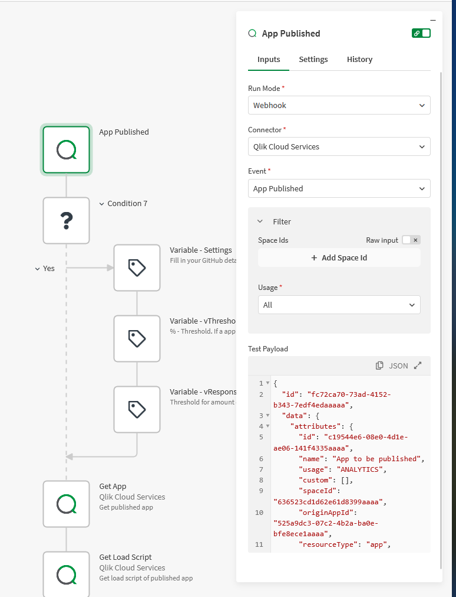
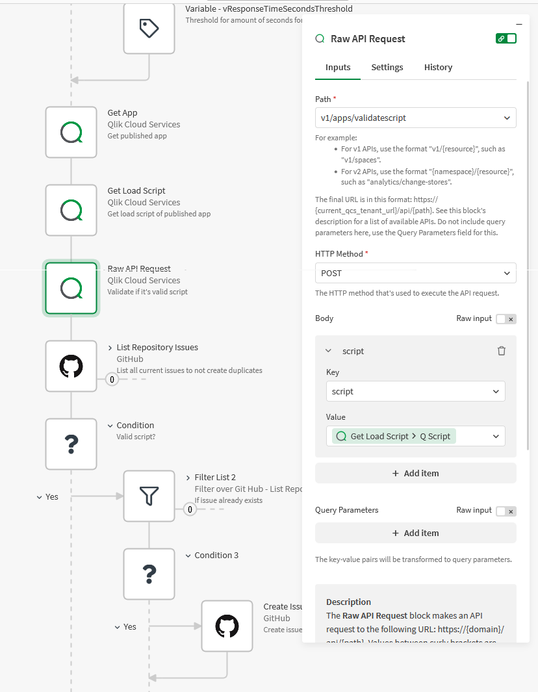
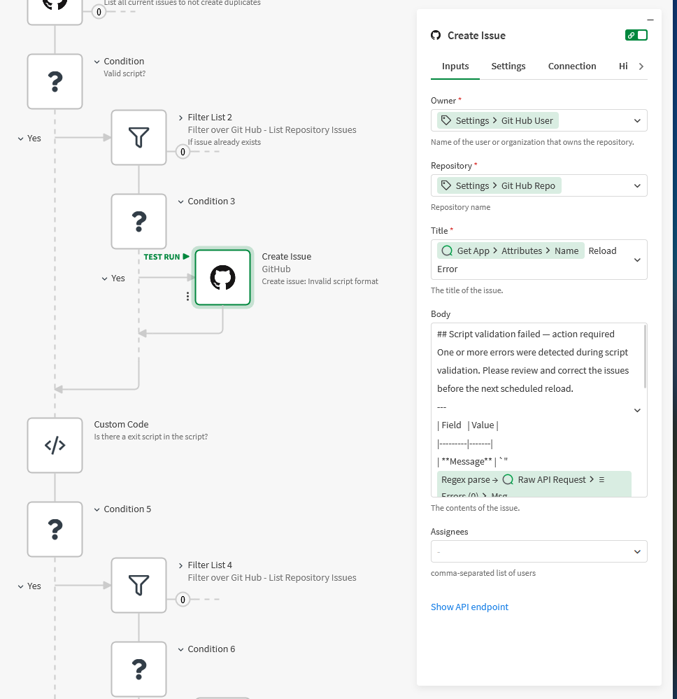
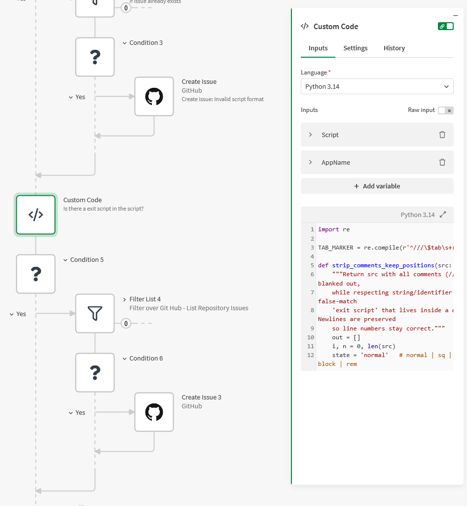
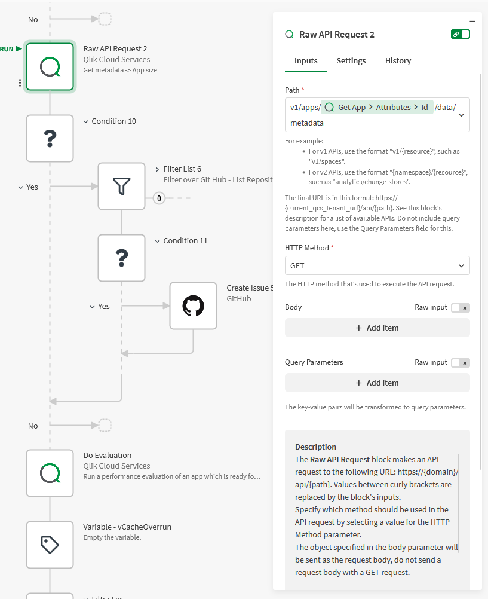
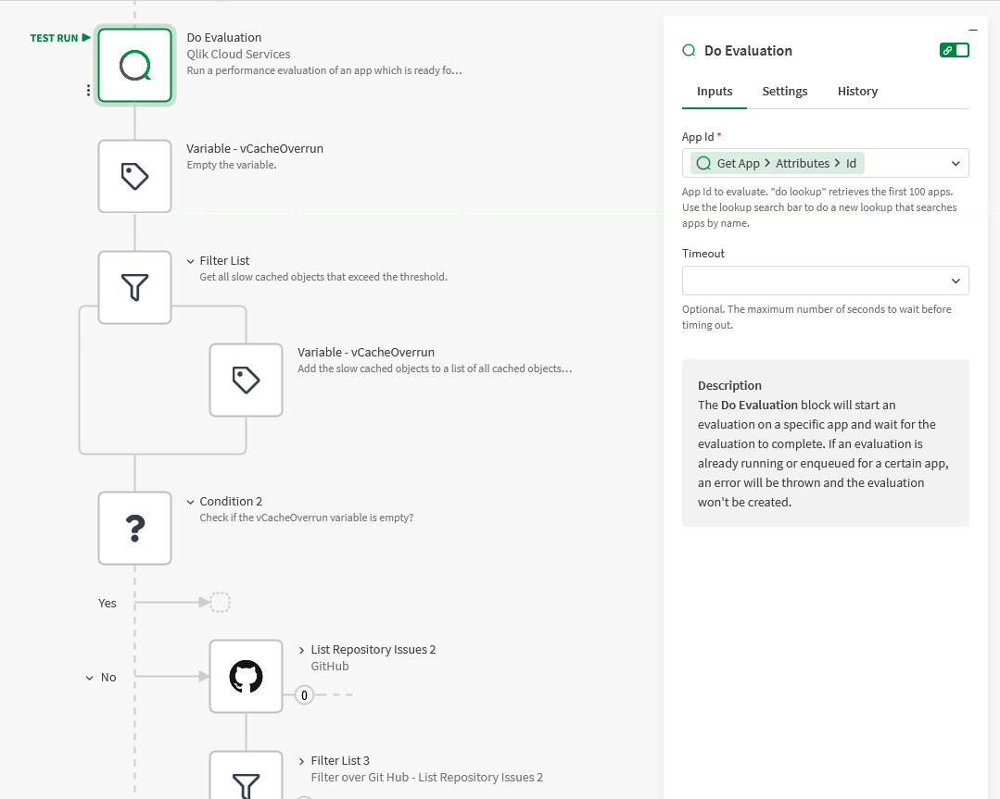

Software teams don't merge code without a pipeline checking it first — linting, tests, size budgets, the lot. Qlik apps rarely get the same treatment, even though a bad reload or a bloated app costs just as much. The good news: you already have everything you need to build a quality gate. A webhook, the Qlik Cloud APIs, a Python code block, and a GitHub connector are enough to turn "someone publishes an app" into "the app is automatically inspected, and if it fails a check, an issue is filed."
This post walks through a working CI/CD automation that fires on publish and runs a handful of checks — script validity, banned statements, hard-coded paths, app size, and render performance — opening a GitHub issue for each failure. None of these checks are the point in themselves; the point is the pattern. Once the skeleton is in place, the world is your oyster: add whatever rule your team cares about.
Start from the template Qlik already built
You don't have to start from a blank canvas. Qlik ships a Change Control template called "Do app evaluation and publish app" in the template picker. It already wires up the app-evaluation block and the performance thresholds — exactly the fiddly part. Grab it and bolt your own checks onto it.

The trigger: run on every publish
Set the start block to Webhook run mode, connector Qlik Cloud Services, event App Published. Now the automation fires automatically whenever an app is published to a managed space — no schedule, no manual run. You can filter by space and usage so it only watches the spaces you care about.

The publish event payload contains the app's ID. From there, two Qlik Cloud Services blocks give you everything the checks need: Get App (metadata — name, owner, size) and Get Load Script (the full script text). A couple of variable blocks up top hold your GitHub repo settings and the numeric thresholds, so tuning the pipeline never means editing logic deep in the flow.
Check 1 — Is the load script even valid?
The cheapest, highest-value check: will the script reload at all? Qlik exposes a validation endpoint, so you don't have to actually run anything. Use a Raw API Request block:
- Path:
v1/apps/validatescript - Method:
POST - Body: key
script→ value fromGet Load Script > qScript

The endpoint returns a list of errors (empty if the script is clean). A Condition branches on whether that list has anything in it. If it does — file an issue.
Filing issues without spamming the repo
Before every Create Issue, the automation runs a List Repository Issues + Filter List pair to check whether an open issue for this exact problem already exists. Only create a new one if the filtered list is empty. This is the single most important habit in the whole pipeline — without the dedupe step, a daily-published app with a standing problem would open a fresh issue every single day.

The issue title is built from the app name (Get App > Attributes > Name) and
the body is GitHub-flavoured Markdown describing what failed — the validation messages parsed
straight out of the API response. A reviewer opening the repo sees exactly which app, and
exactly what's wrong.
Settings variable object at the top of the automation, not hard-coded on each
block. When you point the pipeline at a different repo, you change it in one place.
Check 2 — A banned statement: EXIT SCRIPT
Some things are valid Qlik but should never reach production. The classic is a stray
EXIT SCRIPT a developer left in while debugging — the script "succeeds" but only
loads half the data. You can't catch this with the validator; you need to inspect the text.
A Custom Code block running Python does it.

The naïve version — "exit script" in script — produces false positives: it would
flag an EXIT SCRIPT sitting inside a comment, or the words appearing in a quoted
string. The block does it properly. It first blanks out every comment
(//, /* */, REM … ;) and string literal while
preserving line positions, then searches the cleaned text:
import re
EXIT_RE = re.compile(r'\bexit\s+script\b', re.IGNORECASE)
# strip_comments_keep_positions() walks the script char by char,
# tracking whether we're inside '…' "…" […] a // line comment,
# a /* */ block, or a REM … ; comment — blanking those regions
# (but keeping newlines) so keywords inside them never match.
Script = inputs['Script']
cleaned = strip_comments_keep_positions(Script)
hits = []
for m in EXIT_RE.finditer(cleaned):
line_no = Script.count('\n', 0, m.start()) + 1
hits.append({'line': line_no,
'snippet': Script.splitlines()[line_no - 1].strip()})
It even splits the script on ///$tab markers so the issue can report
which tab and line the offending statement is on, and it ignores a deliberate
EXIT SCRIPT that is the very last statement of the final tab (a common, legitimate
pattern). The output feeds the same dedupe-then-Create-Issue path as before.
Check 3 — Hard-coded lib paths
Another text-inspection check, same shape. A connection path should go through a variable so it
can differ between dev and prod — lib://$(vDataPath)/sales.qvd, not a literal
lib://DataFiles/sales.qvd baked into the script. A second Python block flags any
lib:// path that ends in a data-file extension with no $ variable
anywhere in it:
DATA_EXT = r"(?:qvd|qvx|csv|tsv|txt|xls|xlsx|xlsm|json|xml|parquet|dat)"
# A literal lib:// path ending in a data extension, with NO $ between
# lib:// and the extension — so anything using $(vVar) is NOT flagged.
HARDCODED_LIB = re.compile(
r"lib://[^'\"\]\)\($\r\n]*\." + DATA_EXT + r"\b", re.IGNORECASE)Same comment-stripping pass first (so a commented-out example path doesn't trip it), same issue-creation path after. Two checks, one reusable skeleton.
Check 4 — App size against a budget
Now metadata instead of script text. A Raw API Request to
v1/apps/{appId}/data/metadata (GET) returns the in-memory footprint of the app.
Compare it to a budget you set in a variable — say 80% of a 5 GB ceiling —
and open an issue when an app crosses it, before it becomes a reload failure or a slow,
memory-starved experience for users.

Check 5 — Slow-rendering visualizations
This is the part the Qlik template gives you for free. The Do Evaluation block
runs a full performance evaluation of the app and waits for it to finish, returning per-object
timings. Filter that result for any object whose response time exceeds your
vResponseTimeSecondsThreshold, collect the offenders, and — if there are any —
open an issue listing the slow charts.

The reusable pattern
Strip away the specifics and every check is the same five steps:
- Gather — read the script, metadata, or evaluation result.
- Test — an API call, a Python block, or a filter decides pass/fail.
- Dedupe — List Repository Issues + Filter to see if it's already reported.
- Branch — a Condition on "failed AND not already reported".
- Report — Create Issue with a clear, app-specific title and Markdown body.
That's the whole framework. Want to enforce a naming convention on master measures? A Python block. Check that the app has a description and an owner? Read the metadata. Verify a mandatory section-access table is present? Search the script. Each new rule is just another Test step dropped into the same skeleton.
Bottom line
- Start from the Qlik "Do app evaluation and publish app" template — it hands you the performance-evaluation half for free.
- Trigger on the App Published webhook so checks run automatically on every publish, no schedule needed.
- Mix the tools: the validate-script API for reload validity, Python code blocks for text rules (EXIT SCRIPT, hard-coded paths), metadata for size, Do Evaluation for render speed.
- Always dedupe before Create Issue — list and filter existing issues first, or a recurring problem floods the repo.
- It's a skeleton, not a fixed recipe. Gather → test → dedupe → branch → report. Bolt on whatever your team should never ship.